Released on June 18, 2008
(Next Release on June 25, 2008)
Low Refinery Utilization and High Prices?
Refinery utilization was lower than typical in first quarter 2008. Actual first-quarter 2008 utilization averaged 84.7 percent, compared to the average of 89.1 percent during first quarter 2001 through 2005 (years where first quarter volumes were not significantly impacted by hurricanes). In April and May, utilization remained low, averaging 86.1 compared to an average of 94.1 for the two months during 2001-2005. While petroleum product prices are continuing to break new records, why is refining capacity utilization low? And would increasing refinery utilization reduce those prices?
Refinery outages seem to be running at relatively normal levels in 2008, implying that discretionary cutbacks represented a 4- to 5-percentage-point reduction in utilization during the first quarter, and about an 8-percentage-point reduction in April and May.
Market conditions and product yields provide insight into this question. Utilization is not the only means refineries have of changing product volumes. Refiners typically adjust their output of a product either by adjusting the inputs to the refinery, which affects the output of all products, or by adjusting the yield or fraction of a product produced from a barrel of crude oil. While yields cannot be changed much in the short term since they are a function of refinery equipment, small yield shifts among products can still produce a significant swing in volumes. For example, if refinery inputs are at 15.4 million barrels per day (mainly crude oil), a one-percent change in yield is a 154,000 barrel-per-day change in product volume. Both input changes (which affect refinery utilization) and yield changes have been exercised by refiners in 2008 to meet the market conditions.
Market conditions are the driver behind the discretionary cutbacks in crude inputs. Gasoline prices have risen in 2008 mainly from increases in crude oil prices. Refiners purchase that crude oil and sell product at wholesale prices. The wholesale gasoline price spread (the difference between spot gasoline and crude oil price), where refiners operate, has narrowed, indicating plenty of gasoline supply has been available to meet demand. Supply was outpacing demand in January and February, and inventories built substantially (Figure 1), resulting in very high stock levels and very low wholesale (e.g., spot) gasoline price spreads. Indeed, at some points in March 2008, the gasoline wholesale price was actually cheaper than crude oil. In addition, refiners have been blending more ethanol into gasoline, further reducing the need for gasoline from crude oil. As summer demand has been picking up, inventories have been drawn down from their very high levels at the beginning of March, but gasoline spreads have not increased much. If U.S. refinery utilization increased, gasoline prices might decrease some, but probably not by much, since wholesale gasoline spreads are already low, and crude prices remain high.
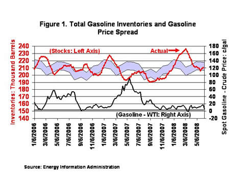
In contrast, distillate spot-price spreads have been high this year. (Figure 2) As discussed in the June 4, 2008 This Week in Petroleum, world distillate markets have been tight, and U.S. distillate prices are being set internationally. International demand has been drawing distillate from the United States. First quarter exports in 2008 averaged 365 thousand barrels per day, the highest first quarter exports ever. Last year, first quarter exports were 203 thousand barrels per day.
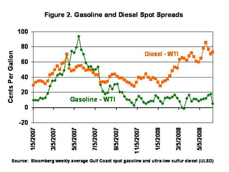
In response to the weak gasoline price spreads and high distillate spreads, refiners appear to have reduced crude inputs (and thus utilization) and adjusted their product slate to favor distillate production relative to gasoline. Despite the reduction in crude oil inputs and refinery utilization rates from typical levels, distillate production in the first quarter of 2008 exceeded first quarter 2007 levels by about 30 thousand barrels per day, which was accomplished by shifts in product yields. Larger shifts to distillate have occurred during the second quarter. In April and May, weekly data indicate distillate production was about 70 thousand barrels per day higher this year than last, or more than twice the increase seen during the first quarter. If U.S. refiners increased utilization, it would provide more distillate for world markets, but would not be enough volume to change world distillate prices substantially in the short run. But adding volumes could reduce the U.S. spread somewhat. Still, even with lower distillate spreads, distillate prices would remain high, pushed up by crude oil price.
U.S. Average Gasoline Price Moves Higher Again; Price in California Surges Past $4.50 for the First Time
The U.S. average retail price for regular gasoline moved up to yet another record high. The jump of 4.3 cents was the twelfth consecutive weekly increase, bringing the price to 408.2 cents per gallon, a surge of 82.3 cents since March 24. The average price for the East Coast increased 3.3 cents to 405.2 cents per gallon. The Midwest price rose 1.5 cents to 399.7 cents per gallon. The Gulf Coast price grew 2.8 cents to 393.7 cents per gallon, once again remaining the lowest of any region. In the Rocky Mountain region, the price jumped 5.3 cents to 399.4 cents per gallon. The price rise on the West Coast was sharply higher than the other regions, surging 12.7 cents to hit 445.2 cents per gallon. The average price in California soared 15.5 cents to reach a record 458.8 cents per gallon.
The national average price of diesel fuel was unchanged from the previous week at 469.2 cents per gallon. On a regional basis, prices were mixed, moving up slightly in the East Coast and Midwest but dropping somewhat in the Gulf Coast, Rocky Mountains and West Coast. The average price on the East Coast increased 0.9 cent to 475.2 cents per gallon; within the region, prices increased in New England and the Lower Atlantic but dipped slightly in the Central Atlantic. Despite the small drop of half a cent in the Central Atlantic, the price of 487.4 cents per gallon was still 200.5 cents higher than a year ago. In the Midwest, the price moved up three-tenths of a cent but remained the lowest of any region at 461.8 cents per gallon. The average price in the Gulf Coast was 465.6 cents per gallon, dropping just two-tenths of a cent. The price in the Rocky Mountains dropped 1.3 cents to 468.5 cents per gallon. On the West Coast, the average price dipped 2.2 cents to 485.2 cents per gallon. In California, the average price also fell, dropping 2.3 cents to 496.9 cents per gallon.
Propane Inventories Extend Weak Build
Propane inventories extended the slowdown in the buildup of the Nation’s primary supply of propane for the second consecutive week with a weekly gain of less than 0.1 million barrels. As of June 13, 2008, inventories stood at an estimated 38.5 million barrels, a level about 1.2 million barrels below the same year-ago level. Regional inventory activity was mixed last week, with the Midwest showing a weekly gain that measured 0.3 million barrels. Weekly declines were reported in both the East Coast and Gulf Coast areas with inventories down similarly by 0.1 million barrels, while the combined Rocky Mountain/West Coast region remained relatively unchanged during this same period. Propylene non-fuel use inventories rose by 0.2 million barrels, pushing its share higher to 5.1 percent of total propane/propylene inventories from the prior week’s 4.7 percent share.
Text from the previous editions of “This Week In Petroleum” is now accessible through a link at the top right-hand corner of this page.
| Retail Prices (Cents Per Gallon) | |||||||
| 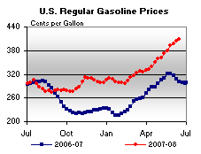 | 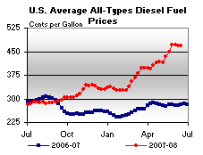 | ||||||
| Retail Data | Changes From | Retail Data | Changes From | ||||
| 06/16/08 | Week | Year | 06/16/08 | Week | Year | ||
| Gasoline | 408.2 | Diesel Fuel | 469.2 | ||||
| Spot Prices (Cents Per Gallon) | |||||||||||||||||||||||||||||||||||||||
| 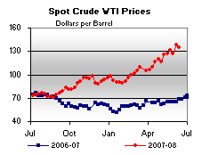 | 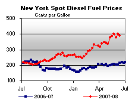 | ||||||||||||||||||||||||||||||||||||||
| 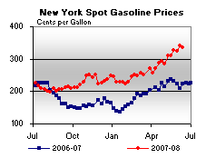 | 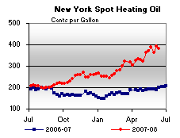 | ||||||||||||||||||||||||||||||||||||||
|
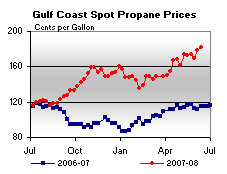 | ||||||||||||||||||||||||||||||||||||||
| Stocks (Million Barrels) | |||||||
| 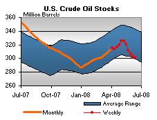 | 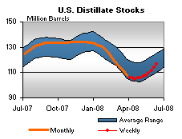 | ||||||
| 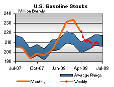 | 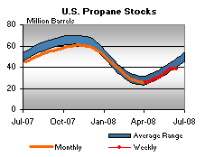 | ||||||
| Stocks Data | Changes From | Stocks Data | Changes From | ||||
| 06/13/08 | Week | Year | 06/13/08 | Week | Year | ||
| Crude Oil | 301.0 | Distillate | 116.6 | ||||
| Gasoline | 208.9 | Propane | 38.528 | ||||